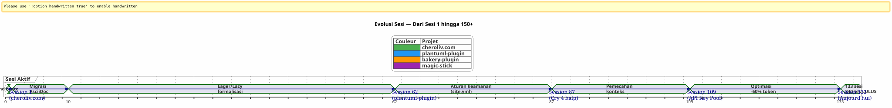
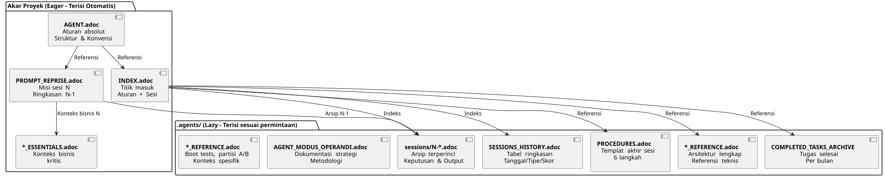

Mengelola Agen AI dengan AsciiDoc: Strategi Eager/Lazy Saya untuk Sesi Opencode tanpa Kebocoran Konteks
Diterbitkan 24 April 2026
ringkasan
Saat bekerja dengan agen AI seperti Opencode pada proyek-proyek kompleks di beberapa sesi, kita menghadapi masalah fundamental:pembocoran konteks. Agen tidak mengingat sesi sebelumnya. Semua yang dijelaskan kepadanya — arsitektur, konvensi, keadaan backlog — telah hilang. Membangun kembali konteks ini di setiap sesi membutuhkan biaya, lambat, dan sumber kesalahan.
Artikel ini menjelaskan strategi artesanal yang telah saya bangun untuk menyelesaikan masalah ini: sebuah sistem pemerintahan yang berkelanjutan berbasis file AsciiDoc, dengan sebuah dikotomiantusias/malasuntuk mengoptimalkan konsumsi token konteks, dan satuproses akhir sesi yang harus dilakukanuntuk menjamin kelangsungan
Pertunjukan : Senin, 21 April, 09.00
Saya membuka kembali Opencode untuk melanjutkan plugin Gradle saya`plantuml-plugin`. Malam ini, saya menghabiskan tiga jam untuk berdiskusi dengan agen arsitektur dari pool kunci API — rotasi round-robin, pengelolaan kuota, fallback otomatis. Pagi ini, agen itu menatap saya dengan mata ikan mas.
_ — Halo, saya adalah asisten Opencode Anda. Bagaimana saya bisa membantu Anda hari ini? _
Tidak — Ah ya, kumpulan kunci API, kita berada di struktur YAML. Tidak — Perhatikan,PlantumlManager`adalah objek Kotlin singleton, bukan kelas. Tidak — Tidak, kami telah memutuskan kemarin bahwa`SyntaxValidationResult`masih ada sebuah sealed class nested di`PlantumlService.
Semua harus dibuat ulang. Lebih tepatnya: semua harus dijelaskan ulang. Saya akan menghabiskan dua puluh menit pertama sesi saya untuk merekonstruksi konteks yang sudah dimiliki oleh agen kemarin. Dua puluh menit token terbakar. Dua puluh menit di mana saya bisa melakukan coding, tapi saya justru melakukan pendidikan yang wajib.
Ini bukan bug Opencode. Ini adalah sifat yang mendasar dari LLM berbasis percakapan: antara dua sesi, memori kerja adalahsepenuhnya terhapus. Agen tidak mengingat misi sebelumnya, keputusan yang diambil, jebakan yang teridentifikasi, kode yang telah kita tulis bersama.
Saya telah mengalami itu puluhan kali. Pada empat proyek bersamaan. Dengan sesi yang berlanjut selama minggu-minggu. Saya telah menghitung: rata-rata,30 hingga 40%Ia dipanahkan untuk rekontekstualisasi agen. Pada sesi 87 proyek.plantuml-plugin, aku sudah tidak tahan lagi. Aku tidak mampu lagi menjelaskan untuk kali kesepuluh bahwa`AttemptEntry`adalah sebuah kelas data level atas dalam`DiagramProcessor.kt`.
Aku butuh sistem. Bukan hack. Tata kelola yang sebenarnya.
Genesis: Dari Chaos ke Metode
Sesi Pertama: Era Gelap
Proyek pertama saya dengan Opencode,plantuml-plugin, dimulai tanpa tata kelola. Saya mengajukan pertanyaan, agen menjawab, kita mengulangi, sesi berakhir, dan besok kita memulai dari nol. Itu adalah sesi 1, lalu sesi 2, lalu sesi 3… hingga sesi 62 ketika saya menyadari bahwa saya telah kehilangan jam-jam yang terkumulatif untuk menjelaskan kembali arsitektur yang sama.
Pada sesi 62, angka-angka ada:198 tes unit lulus, 42 tes fungsional yang divalidasi, plugin berfungsi. Tetabi biaya kognitif tidak dapat ditoleransi. Setiap sesi baru dimulai dengan sebuah monolog dua puluh menit tentang struktur proyek.
Episode site.yml Dihancurkan (Sesi 2, bakery-plugin)
Metode ini juga lahir dari sebuah bencana. Di proyek`bakery-gradle`, pada sesi 2, saya meminta agen untuk mengubah file`site.yml`. Agen, tanpa memverifikasi apakah file tersebut telah diberi versi, membuat`Write`yang lengkap yang menimpa konten. Hasil: token nyata (kunci API Firebase, rahasia penerapan) diganti dengan placeholder palsu. File tidak berada di git — ia berada di`.gitignore`untuk melindungi rahasia.
Tanpa cadangan. Tanpa`git restore`mungkin. Saya terjebak. Saya harus membangun ulang file konfigurasi secara manual, menemukan token di manajer kata sandi saya, menempelkan semuanya kembali.
Dari kegelisahan inilah lahirAturan Mutlak 1b:
_ Jangan pernah menimpasebuah file config dengan sebuah`Write`lengkap ketika satu`Edit`sebagian cukup.JANGAN PERNAH menggantinilai sensitif dengan nilai tiruan.Periksa git check-ignore dan `git ls-filesSebelum modifikasi apa pun. _
Aturan ini, hari ini terukir di batu dalam semua file saya`AGENT.adoc` et `INDEX.adoc`pada empat proyek, lahir dari kesalahan nyata yang telah menghabiskan satu jam kerja manual saya
Migrasi Markdown → AsciiDoc (Sesi 1, cheroliv.com)
Pada 25 April 2026, pada`cheroliv.com`, saya mengambil keputusan radikal: mengonversi seluruh tata kelola Markdown ke AsciiDoc. Ini tidak estetis. Ini fungsional. AsciiDoc memberikan struktur semantik yang lebih baik dibaca oleh LLM : bagian hierarkis, tabel bertipe, peringatan (NOTE, WARNING, CAUTION), atribut dokumen yang dapat dibaca mesin.
Sesi 1 dari`cheroliv.com`Mengformalkan struktur :
-
konversi dari`AGENTS.md` en
AGENT.adoc -
Pembuatan agen spesial :`CODER.adoc`,
SCRUM_MASTER.adoc,PLANTUML_DESIGNER.adoc -
Pembuatan struktur Eager/Lazy:`INDEX.adoc`,
SESSIONS_HISTORY.adoc,AGENT_SESSION_MANAGER.adoc,SESSION_CHECKLIST.adoc,PROCEDURES.adoc
Satu commit :`90975e9 refactor: migrate agent governance from Markdown to AsciiDoc`. Dan situs masih berfungsi.

Timeline di atas menggambarkan progres aktual. Titik balik adalah sesi 87: itu di mana ketidakpuasan dari rekontekstualisasi berulang melebihi ambang toleransi, dan metode Eager/Lazy tidak lagi hanya sebuah ide, melainkan menjadi kewajiban.
Strategi: Eager/Lazy Mendalam
Filsafat : Cache Informatika diterapkan pada Kognisi
Pendekatan saya terinspirasi langsung dari pengelolaan cache komputer. Semua yangkritis dan sering digunakanharus segera dapat diakses (bersemangat). Semua yangkontekstual atau berukuran besarharus dimuat saat diperlukan (malas)
Eager (Dashboard) |
Malas (Manual Pemilik) |
ukuran |
< 100 baris, < 10k token |
Tidak terbatas, rinci |
Memuat |
Otomatis, di awal sesi |
Atas permintaan agen |
Isi |
Aturan mutlak, misi saat ini, kondisi kritis |
Arsip sesi, riwayat lengkap, prosedur terperinci, referensi teknis |
peran |
Arahkan segera agen |
Menjawab pertanyaan konteks mendalam |
File Eager: Dasbor
File-file ini berada di akar setiap proyek dan dimuat secara otomatis oleh agen pada awal setiap sesi. Mereka membentuk lepapan instrumen-- informasi kritis, langsung dapat diakses.

AGENT.adoc-- File utama. Pada`cheroliv.com`, itu memiliki 200 baris dan berisi :
-
Aturan absolut proyek (tanpa commit tanpa izin, tanpa`rm`tanpa konfirmasi)
-
Struktur proyek dan konvensi kode
-
Perintah penting (
./gradlew serve,./gradlew test) -
Epik dan backlog produk (user stories yang diprioritaskan)
-
Kriteria kualitas lintas (aksesibilitas, responsif, kompatibilitas)
di atas`bakery-plugin`, Aturan 0 berbeda :./gradlew -q publishToMavenLocal` wajib setelah setiap perubahan kode sumber. Karena menguji plugin tanpa menerbitkan ulang JAR lokal membuatku kehilangan satu jam untuk men-debug kode yang belum dipaketkan.
PROMPT_REPRISE.adoc-- Misi sesi yang sedang berlangsung. Diperbarui pada akhir setiap sesi, ia berisi:
-
Nomor sesi dan misi prioritas
-
Ringkasan sesi sebelumnya (apa yang telah dilakukan, apa yang masih perlu dilakukan)
-
Kriteria penerimaan sesi saat ini
-
Pengingat teknis spesifik
.agents/INDEX.adoc-- Titik masuk. Ia merangkum aturan mutlak, sesi terkini, dan terutamaportofolio proyekDikelola dengan metodologi yang sama. Saat ini, lima proyek tercantum di sana:
----
----
----
| magic-stick | Session 23 | SCRIPT_VERIFICATION.adoc | 2026-04-27 |
| bakery-gradle | Session 11 | TEST_COVERAGE_ANALYSIS | 2026-04-27 |
| cheroliv.com | Session 9 | TEST_COVERAGE_ANALYSIS | 2026-04-27 |
| plantuml-gradle| Session 133| TEST_COVERAGE_ANALYSIS | 2026-04-23 |
| jhipster-gradle-plugins | Session 1 | TEST_COVERAGE_ANALYSIS | 2026-04-28 |
----
**`*_ESSENTIALS.adoc`** -- Penambahan baru (Session 109, plantuml-plugin) untuk mengoptimalkan lagi konteks Eager. Alih-alih memuat 200 baris konteks bisnis di pool kunci API, saya memuat 50 baris dari inti, dan 150 baris lainnya tetap dalam keadaan LAZY di`*_REFERENCE.adoc`.
Hasil yang diukur: peralihan**~25k tokens EAGER ke ~10k tokens**(kenaikan 60%). Agen tidak lagi membutuhkan pengingat yang boros energi.
==== Rantai yang Hilang : `opencode.json
Saya harus mengakui suatu hal yang hampir saya lupa untuk didokumentasikan. Di atas semua file .adoc ini, terdapat sebuah file JSON sangat kecil yang tanpa-nya tidak ada yang berfungsi. Namanya`opencode.json`dan dia membuat enam baris. Secara literal enam baris.
[source,json]
----
{
"$schema": "https://opencode.ai/config.json",
"instructions": [
"AGENT.adoc"
]
}
----
Ini file yang memberitahu Opencode : « Saat mulai, muat`AGENT.adoc`secara otomatis. » Tanpa dia, agen itu merupakan halaman putih persis seperti yang saya gambarkan di awal artikel. Dengan dia, agen sudah memiliki di tangan rules absolut, arsitektur proyek, dan perintah penting — bahkan sebelum saya katakan halo.
Saya menemukan pentingnya file ini secara kebetulan. Tentang`bakery-plugin`, tidak ada. Saya bertanya-tanya mengapa agen tersebut secara konsisten lebih « bingung » pada proyek ini dibandingkan dengan yang lain. Aturan mutlak berada baik di`AGENT.adoc`— tapi`AGENT.adoc`tidak pernah terisi. Agen hanya membaca apa yang saya katakan kepadanya untuk dibaca, secara manual, di setiap sesi. Ini adalah sesi 11 dari`bakery-plugin`ketika saya menyadari ketidakhadirannya`opencode.json`. Saya telah membuatnya — dan sesi 12 dimulai seperti yang lain.
File ini sangat jelas bagi saya sekarang bahwa saya bahkan tidak lagi memikirkan itu. Ini adalah kesalahan klasik dari seorang pengembang yang terlalu familiar dengan alatnya. Hari ini, saya membuatnya secara sistematis *sebelumnya*.`AGENT.adoc`. Ini adalah batu pertama.
==== Dualitas dari `INDEX.adoc
Satu lagi hal halus yang layak diperjelas:`INDEX.adoc`hidup di`.agents/`— sebuah folder yang saya presentasikan sebagai LAZY. Namun, saya menentukannya sebagai EAGER di semua tabel saya. Ada ketegangan yang jelas di sini.
Realitas lapangan: file-file`.agents/INDEX.adoc`sudah dimuat secara otomatis pada awal sesi, sama seperti`AGENT.adoc` et `PROMPT_REPRISE.adoc`. Mereka berada di`.agents/`karena alasan organisasi — jangan menginvasi akar — tapi perilaku mereka EAGER.
Di`plantuml-plugin`, `INDEX.adoc`Memiliki 200 baris dan memuat aturan mutlak *lengkap* dengan histori mereka (pelajaran dari sesi sebelumnya), EPIC dengan skor, dan portofolio proyek. Ini adalah dokumen yang dikonsultasi oleh agen untuk mengetahui « di mana kita berada ». Pada`bakery-plugin`, dia membuat 150 baris dengan roadmap dan sesi terbaru.
Redundansi sengaja di antara`AGENT.adoc` et `INDEX.adoc`Mungkin mengejutkan. Aturan mutlak ada di keduanya. Mengapa? Karena mereka memenuhi dua peran yang berbeda: dalam`AGENT.adoc`, mereka adalah *explicatives* (storytelling dari aturan, pelajaran yang dipelajari) ; dalam`INDEX.adoc`, mereka adalah *eksekutif* (aturan telanjang, tanpa justifikasi, untuk konsultasi cepat). Agen membaca`AGENT.adoc`sekali untuk *memahami*; ia membaca kembali`INDEX.adoc`pada setiap sesi untuk *menerapkan*. Dua penggunaan, dua format.
[plantuml, format=svg, id=diag-dualite-agent-index, alt="Comparaison entre AGENT.adoc (narratif) et INDEX.adoc (exécutif)"]
----
@startuml
skinparam backgroundColor #FEFEFE
skinparam defaultTextAlignment center
title Dualitas AGENT.adoc ←→ INDEX.adoc
left to right direction
rectangle "AGENT.adoc\n(Akar — EAGER)" as AGENT #E3F2FD {
rectangle "📖 **Format Narasi**\nStorytelling dari aturan\npelajaran yang dipelajari, konteks" as NARR
rectangle "🏗️ **Arsitektur Lengkap**\nStruktur proyek, komponen\nBacklog terinci US" as ARCHI
rectangle "📋 **Aturan Penjelasan**\nMengapa aturan ada\nRiwayat insiden" as EXPL
}
rectangle "INDEX.adoc\n(.agents/ — EAGER)" as INDEX #E8F5E9 {
rectangle "⚡ **Format Eksekutif**\nAturan telanjang, tanpa justifikasi\nKonsultasi cepat" as EXEC
rectangle "📊 **Roadmap & EPICs**\nTabel ringkasan\nProgres, Skor, Prioritas" as ROAD
rectangle "🌐 **Portofolio Proyek**\nTampilan melintang\n5 proyek disinkronkan" as PORT
}
AGENT --> INDEX : "Agent membaca AGENT.adoc\n1 kali untuk **memahami**"
INDEX --> AGENT : "Agent membaca kembali INDEX.adoc\nsetiap session untuk **menerapkan**"
note bottom of AGENT
Taille max : 200 lignes
end note
note bottom of INDEX
Taille max : 200 lignes
Source de vérité en cas de divergence
end note
@enduml
----
Redundansi yang diasumsikan ini adalah pilihan desain. Dia mengonsumsi sekitar 50 baris tambahan token EAGER — namun ia menjamin bahwa agen selalu memiliki aturan di depan mata, termasuk dalam format singkat yang memfasilitasi kepatuhan segera.
=== File LAZY : Manual Pemilik
File-file ini hidup di`.agents/`dan hanya dibaca ketika agen membutuhkannya. Mereka merepresentasikan kekayaan sejati dari metode tersebut, karena mereka mengakumulasi pengetahuan proyek tanpa mencemari konteks saat ini.
[plantuml, format=svg, id=diag-agents-tree, alt="Arborescence complète du dossier .agents/"]
----
@startuml
skinparam folderBackgroundColor #E3F2FD
skinparam folderBorderColor #1565C0
skinparam fileBackgroundColor #FFF3E0
skinparam fileBorderColor #EF6C00
folder ".agents/" as ROOT {
file "INDEX.adoc\n(EAGER -- 200 baris)" as IDX #E8F5E9
file "AGENT_SESSION_MANAGER.adoc\n(Sesi template)" as ASM
file "SESSION_CHECKLIST.adoc\n(Kapan mengubah)" as CHK
file "PROCEDURES.adoc\n(6 langkah + LAZY/EAGER)" as PRO
file "SESSIONS_HISTORY.adoc\n(Semua sesi)" as HIS
folder "sesi/" as SESS {
file "1-chore-migration.adoc" as S1
file "109-formalisasi-lazy.adoc" as S109 #FFECB3
file "133-epic11-article.adoc" as S133
file "... +130 lainnya" as SMORE
}
folder "arsip/" as ARCH {
file "COMPLETED_TASKS_2026-04.adoc" as CTA
file "SESSIONS_HISTORY_83-95.adoc" as SHIST
folder "sessions_summaries/" as SUM {
file "SESSION_64_SUMMARY.adoc" as SU64
file "SESSION_73_SUMMARY.adoc" as SU73
file "..." as SUMORE
}
folder "prompts_archive/" as PARCH {
file "PROMPT_REPRISE_S65.adoc" as PR65
file "PROMPT_REPRISE_S75.adoc" as PR75
file "..." as PMORE
}
}
}
IDX --> SESS : "Indeks"
IDX --> HIS : "Indeks"
IDX --> ARCH : "Referensi"
note right of S109
Session 109 =
Formalisation stratégie
LAZY/EAGER
Token : ~25k → ~10k
end note
@enduml
----
Struktur direktori di atas menunjukkan struktur sebenarnya dari folder`.agents/`di atas`plantuml-plugin`, proyek paling matang. Perhatikan kedalaman dalam tiga lapisan: file akar (metadat), folder`sessions/`(arsip kronologis), dan file`archives/`(agregasi dan ringkasan). Ini adalah kedalaman yang mengubah tata kelola dari sebuah file TODO sederhana menjadi**memori organisasional lengkap**.
**.agents/sessions/{N}-{titre}.adoc**-- Arsip terperinci setiap sesi. Saat ini :
* `plantuml-plugin`:**133 sesi terarsip**dari sesi 1 hingga 133
* `bakery-plugin` : **11 sesi**
* `magic-stick`:**23 sesi**
* `cheroliv.com`:**9 sesi formal**+ 7 sesi pra-sistem yang direkonstruksi secara retroaktif
Setiap arsip berisi konteks lengkap sesi, keputusan yang diambil, masalah yang dihadapi dan penyelesaiannya, perintah yang dijalankan dan output.
**.agents/SESSIONS_HISTORY.adoc**-- Sebuah tabel ringkasan dari semua sesi dengan skor. Contoh pada`cheroliv.com` :
----
| -6 | 2025-05 | chore | Initialisation projet Gradle/JBake | 7/10 | 1 | 2026-04-25 | chore | Migration gouvernance agent | 8/10 | 7 | 2026-04-27 | debug/fix | Correction publishSite | 9/10 | 8 | 2026-04-27 | analyse | Analyse article 0108 | 7/10
**.agents/COMPLETED_TASKS_ARCHIVE_{mois}.adoc**Tugas yang selesai diarsipkan per bulan, agar tidak membebani backlog aktif. Saat sebuah user story selesai, ia pindah ke sini. Backlog tetap terbaca: maksimal 10 item aktif.
**.agents/PROCEDURES.adoc**-- Mtemplate terperinci prosedur akhir sesi. Panjang, tetapi hanya dibaca satu kali oleh agen ketika ia belajar metode. Selanjutnya, prosedur menjadi mekanis.
**.agents/AGENT_MODUS_OPERANDI.adoc**-- Dokumentasi strategi lengkap. pada`plantuml-plugin`, file ini melakukan**900+ baris**dan sebenarnya bernama`AGENT_METHODOLOGIES.adoc`— Saya telah mengubah nama antara penulisan artikel ini dan pelaksanaannya yang efektif. Jenis divergensi de naming seperti ini tidak terhindarkan dalam sistem artesan yang berkembang. Yang penting adalah konvensi penamaan: jika file dokumentasi *méthode*, maka dimulai dengan`AGENT_`atau sebuah awalan eksplisit. Dia mendokumentasikan metodologi Eager/Lazy, pola yang harus diikuti, dan anti-pola yang harus dihindari. Dia LAZY karena agen tidak perlu membaca ulang seluruh strategi di setiap sesi, hanya ketika ada ambiguïtas.
</think> (no output, as there is no French text provided to translate)`*_REFERENCE.adoc`Referensi teknis spesifik untuk proyek. pada`magic-stick`, dua file LAZY padat :
* `AB_PARTITION_REFERENCE.adoc`(147 baris) -- Arsitektur Parti A/B GPT, skrip`update-system.sh`, ukuran yang diperkirakan, mekanisme rollback
* `BOOT_TEST_REFERENCE.adoc`(144 baris) -- Prosedur QEMU + VNC untuk menguji proses boot ISO tanpa perangkat fisik, daftar periksa BIOS/UEFI, keterbatasan CI/CD
Di`plantuml-plugin` :
* `ARCHITECTURE.adoc`(134 baris) -- Struktur dari 11 kelas data, poin perhatian (jebakan yang harus dihindari), perintah pengujian yang dioptimalkan
* `API_KEY_POOL_REFERENCE.adoc`-- detail lengkap pool kunci (LAZY sementara`ESSENTIALS`EAGER)
== Agen Khusus: Tim Virtual
Governance tidak hanya berisi file pasif. Saya telah mengformalkan beberapa**peran agen spesialis**dalam file LAZY khusus, yang menentukan workflow yang diharapkan sesuai jenis tugas.
|===
|agen |File |peran |Proyek |**mengkode** |`CODER.adoc` |Implementasi FTL/CSS/JS, tag semantik, kriteria aksesibilitas |cheroliv.com |**SCRUM Master** |`SCRUM_MASTER.adoc` |Perencanaan US, pembagian menjadi subtugas, deteksi dependensi |cheroliv.com |**PlantUML Designer** |`PLANTUML_DESIGNER.adoc` |Pembuatan diagram, sintaksis PUML, integrasi JBake |cheroliv.com
|===
file`CODER.adoc`di atas`cheroliv.com`mengandung aturan konkret : _Hanya satu`<h1>`per halaman_, _Mengawali jalur dengan`${content.rootpath}`_, _Mendeklarasikan bahasa`<html lang="${content.lang!"fr"}">`_. Konvensi ini, yang ditulis sekali, dipatuhi secara otomatis oleh agen sejak sesi 1.
File File`SCRUM_MASTER.adoc`Menetapkan struktur hasil kerja:**Tujuan**, **tugas**(koordinat y dengan alokasi),**Kriteria penerimaan**, **Risiko**. Saat saya meminta rencana tindakan, agen menghasilkan struktur ini tanpa saya memintanya. Tata kelola**program**agen.
==== Ketika Agen Spesialis Menjadi Penting
Pembuatan agen spesialis mengikuti kurva alami. Di awal sebuah proyek, Anda tidak memerlukannya —`AGENT.adoc`Cukup lebih dari cukup. Tetapi ketika proyek bertumbuh (katakanlah, di atas 20 sesi), dua sinyal harus memperingatkanmu :
1. Agen mengcampur konvensi dari dua bidang yang berbeda (misalnya: sintaksis PlantUML dan aturan CSS)
2. Anda menghabiskan lebih banyak waktu untuk memperbaiki agen mengenai konvensi yang sudah Anda jelaskan kepadanya 5 kali
pada`cheroliv.com`, itu terjadi di sesi... 1. Ya, sejak awal. Karena proyek ini adalah situs web dengan tiga bahasa (FTL, CSS, JS), konten AsciiDoc, dan diagram PlantUML — tiga bidang yang tidak ada hubungannya. Agen CODER perlu mengetahui ukuran font dan media query; agen PLANTUML_DESIGNER perlu mengetahui sintaks.`@startuml`. Tanpa pemisahan, agen CODER memberikan saya diagram, dan sebaliknya. Kekacauan.
Di atas`jhipster-gradle-plugins`, saya telah membuat dua agen spesial yang disesuaikan untuk pengembangan plugin Gradle :`PLUGIN_DEVELOPER.adoc` et `BACKLOG_MANAGER.adoc`. Yang pertama mengkodekan semua konvensi Kotlin/Gradle (tidak ada`!!`, kelas data untuk model,`@TaskAction`untuk tugas). Yang kedua tahu bahwa`persistence`harus stabil sebelum`assistant`tidak memulai pengembangannya — sebuah dependensi kritis dalam mono-repo
Kesalahan yang harus dihindari: membuat terlalu banyak agen terlalu cepat.`plantuml-plugin`telah menunggu sesi 108 sebelum mengformalisasi agen khusus untuk kolam kunci API. Sebelum itu, konteks bisnis berada di`AGENT.adoc`. Catatan praktis: agen spesialis dapat dibenarkan ketika bidang bisnisnya melebihi 100 baris dokumentasi.
==== Konvensi Penamaan Sesi
Sepertinya detail yang terlihat sepele tetapi menjadi kritis ketika mencapai 100 sesi. Bagaimana menamai file arsip?
Saya belajar dengan cara keras bahwa sebuah konvensi diperlukan — empat proyek, empat format berbeda di awal, dan saya tidak bisa mengikuti. Hari ini, konvensi yang telah saya stabilkan adalah:
----
{N}-{type}-{sujet-kebab-case}.adoc
Contoh konkret :
* `1-chore-migration-gouvernance-agent.adoc`— sesi 1, tipe tugas
* `10-solidification-tests.adoc`— sesi 10, tanpa jenis eksplisit (subjek sudah cukup)
* `036-debug-graphify-symlink-epic9.adoc`— sesi 36 dengan nomor 3 digit untuk pengurutan
Nomor sesi adalah kriteria pengurutan utama. Proyek yang menggunakan nomor dengan 3 digit (001, 036, 133) menghindari masalah pengurutan leksikografis ketika melebihi 99. Itulah yang saya gunakan sekarang pada`magic-stick`:`001-init-projet.adoc`, `036-debug-graphify-symlink-epic9.adoc`.
Tipe bersifat opsional dan diturunkan dari kata kunci sesi (debug, feature, refactor, docs, chore, test). Subjek dalam kebab-case adalah bagian paling penting: ia harus memungkinkan untuk menemukan sesi tanpa membuka file. Jika Anda bertanya « Session mana yang di mana kita memperbaiki timeout tes integrasi? », jawabannya adalah`124-fix-timeout-integration-test.adoc`.
Untuk sesi historis yang direkonstruksi (proyek yang lahir sebelum tata kelola), saya menggunakan angka negatif. pada`cheroliv.com`, sesi -6 hingga 0 mencakup seluruh sejarah pra-pemerintahan proyek. Dan untuk sesi « tidak terdokumentasi » atau yang hilang, saya membuat entri dalam`SESSIONS_HISTORY.adoc`tanpa arsip yang sesuai, dengan skor`?`. Ini lebih jujur daripada berpura-pura.
[plantuml, format=svg, id=diag-naming-convention, alt="Arbre de décision pour le nommage des fichiers de session"]
----
@startuml
skinparam backgroundColor #FEFEFE
skinparam defaultTextAlignment center
skinparam wrapWidth 200
title Konvensi Penamaan Sesi
start
:Une session se termine;
note right: Trigger "akhir sesi"
if (Session antérieure\nà la gouvernance ?) then (oui)
:Numéro **NÉGATIF**\n-6, -5 ... 0;
note right: Historique\nreconstitué
:Suffixe : reconstitution;
else (non)
:Numéro **POSITIF**\nsur 3 chiffres si > 99;
note right: 001, 036, 133\npour le tri lexicographique
:Détecter le **TYPE**;
if (Mots-clés trouvés ?) then (oui)
:debug / feature / refactor\ndocs / chore / test;
else (non)
:Omettre le type\n(le sujet suffit);
endif
:Formuler le **SUJET** en kebab-case;
note right
Ex: fix-timeout-integration-test
Doit permettre de retrouver
sans ouvrir le fichier
end note
endif
:Nom final : {N}-{type}-{sujet}.adoc;
note right
• 1-chore-migration-gouvernance.adoc
• 036-debug-graphify-symlink.adoc
• 124-fix-timeout-integration-test.adoc
• 133-epic11-article-blog-kg.adoc
end note
if (Session documentée ?) then (oui)
:Créer archive dans sessions/;
:Ajouter ligne SESSIONS_HISTORY\navec score X/10;
else (non)
:Ajouter ligne SESSIONS_HISTORY\navec score **?**\n**sans archive**;
note right: L'honnêteté\nplutôt que le vide
endif
stop
@enduml
----
==== TEST_COVERAGE_ANALYSIS.adoc` — Langkah 5 Dijelaskan
Langkah 5 dari prosedur penutupan sesi adalah yang paling misterius. Dia berkata “Memperbarui`TEST_COVERAGE_ANALYSIS.adoc`jika tes telah ditambahkan atau diubah. » Tapi bagaimana struktur file ini?
pada`plantuml-plugin`, ia telah berkembang dari beberapa baris menjadi struktur lengkap. Berikut bentuk yang stabilnya:
[source]
----
= Analyse de Couverture de Tests
== Suivi des Tests
|===
| Classe de test | Type | Tests | Statut | Dernière MAJ
| PlantumlServiceTest | unit | 45/45 | ✅ PASS | 2026-04-23
| ApiKeyPoolTest | integration | 15/15 | ✅ PASS | 2026-04-20
|===
== Historique par Session
| Session | Tests ajoutés | Tests modifiés | Couverture
| 133 | 0 | 2 | 100%
| 132 | 5 | 0 | 100%
|===
----
Keuntungan bukan file itu sendiri — ini adalah kewajiban untuk *mencatat* apa yang berubah. Tanpa langkah ini, setelah 50 sesi, Anda tidak lagi mengetahui tes mana yang mencakup apa. Agen juga tidak. File menjadi sumber satu-satunya kebenaran mengenai cakupan tes proyek.
Untuk proyek tanpa tes tradisional (seperti`magic-stick`yang menguji skrip bash), langkah 5 diganti dengan`SCRIPT_VERIFICATION.adoc`. Mekanisme sama: sebuah file yang melacak status validasi skrip. Sesuaikan langkah 5 dengan proyek Anda, tapi jangan pernah melewatkanlah. Ini adalah jaring keamanan yang mencegah regresi diam-diam.
[plantuml, format=svg, id=diag-dualite-agent-index, alt="Comparaison entre AGENT.adoc (narratif) et INDEX.adoc (exécutif)"]
----
@startuml
skinparam backgroundColor #FEFEFE
skinparam defaultTextAlignment center
title Dualitas AGENT.adoc ←→ INDEX.adoc
left to right direction
rectangle "AGENT.adoc\n(Root — EAGER)" as AGENT #E3F2FD {
rectangle "📖 **Format Naratif**\nStorytelling dari aturan\npelajaran yang dipetik, konteks" as NARR
rectangle "🏗️ **Arsitektur Lengkap**\nStruktur proyek, komponen\nBacklog US terperinci" as ARCHI
rectangle "📋 **Aturan Penjelasan**\nMengapa aturan ini ada\nRiwayat insiden" as EXPL
}
rectangle "INDEX.adoc\n(.agents/ — EAGER)" as INDEX #E8F5E9 {
rectangle "⚡ **Format Eksekutif**\nAturan murni, tanpa pembenaran\nKonsultasi cepat" as EXEC
rectangle "📊 **Roadmap & EPICs**\nTabel ringkasan\nProgres, Skor, Prioritas" as ROAD
rectangle "🌐 **Portofolio Proyek**\nPandangan lintas sektoral\n5 proyek tersinkronisasi" as PORT
}
AGENT --> INDEX : "Agent membaca AGENT.adoc\n1 kali untuk **memahami**"
INDEX --> AGENT : "Agent membaca ulang INDEX.adoc\nsetiap sesi untuk **menerapkan**"
note bottom of AGENT
Ukuran maks: 200 baris
end note
note bottom of INDEX
Ukuran maks: 200 baris
Source de vérité en cas de divergence
end note
@enduml
----
[plantuml, format=svg, id=diag-session-flow, alt="Flux d'une session type avec Eager/Lazy et agents"]
----
@startuml
skinparam backgroundColor #FEFEFE
start
:Début session;
note right: L'agent est une page blanche
:Chargement EAGER auto;
note right
* AGENT.adoc (règles absolues)
* PROMPT_REPRISE.adoc (mission N)
* INDEX.adoc (état projet)
end note
if (Mission claire ?) then (oui)
:Exécution directe;
else (non)
:Charge LAZY sur demande;
note right
* SESSIONS_HISTORY.adoc (contexte passé)
* sessions/{N-1}-*.adoc (décisions)
* *_REFERENCE.adoc (architechture)
end note
endif
:Délégation agent spécialisé ?;
if (CODER ?) then (oui)
:Lit CODER.adoc;
:Suit conventions FTL/CSS;
elseif (SCRUM Master ?) then (oui)
:Lit SCRUM_MASTER.adoc;
:Structure livrable imposée;
elseif (PlantUML ?) then (oui)
:Lit PLANTUML_DESIGNER.adoc;
:Syntaxe PUML + intégration;
else (non)
endif
:Travail de la session;
:Fin de session (trigger utilisateur);
:Procédure 6 étapes;
note right
1. Archive sessions/N-*.adoc
2. Maj PROMPT_REPRISE.adoc (N+1)
3. Maj SESSIONS_HISTORY.adoc
4. Maj INDEX.adoc
5. Maj TEST_COVERAGE (si applicable)
6. Maj COMPLETED_TASKS_ARCHIVE.adoc
end note
:Checklist [✅] x 6;
stop
@enduml
----
Diagram di atas menunjukkan siklus hidup penuh sebuah sesi. Poin kunci adalah percabangan setelah pemuatan EAGER: baik misi cukup jelas untuk dieksekusi langsung (80% kasus), baik agen memuat LAZY untuk menyelesaikan ambigu (20% kasus). Diskriminasi ini menghemat token.
== Prosedur Akhir Sesi : Aturan Emas
[plantuml, format=svg, id=diag-agents-tree, alt="Arborescence complète du dossier .agents/"]
----
@startuml
skinparam folderBackgroundColor #E3F2FD
skinparam folderBorderColor #1565C0
skinparam fileBackgroundColor #FFF3E0
skinparam fileBorderColor #EF6C00
folder ".agents/" as ROOT {
file "INDEX.adoc\n(EAGER -- 200 baris)" as IDX #E8F5E9
file "AGENT_SESSION_MANAGER.adoc\n(Template sesi)" as ASM
file "SESSION_CHECKLIST.adoc\n(Kapan harus mengganti)" as CHK
file "PROCEDURES.adoc\n(6 langkah + LAZY/EAGER)" as PRO
file "SESSIONS_HISTORY.adoc\n(Semua sesi)" as HIS
folder "sessions/" as SESS {
file "1-chore-migration.adoc" as S1
file "109-formalisation-lazy.adoc" as S109 #FFECB3
file "133-epic11-article.adoc" as S133
file "... +130 lainnya" as SMORE
}
folder "archives/" as ARCH {
file "COMPLETED_TASKS_2026-04.adoc" as CTA
file "SESSIONS_HISTORY_83-95.adoc" as SHIST
folder "sessions_summaries/" as SUM {
file "SESSION_64_SUMMARY.adoc" as SU64
file "SESSION_73_SUMMARY.adoc" as SU73
file "..." as SUMORE
}
folder "prompts_archive/" as PARCH {
file "PROMPT_REPRISE_S65.adoc" as PR65
file "PROMPT_REPRISE_S75.adoc" as PR75
file "..." as PMORE
}
}
}
IDX --> SESS : "Indeks"
IDX --> HIS : "Indeks"
IDX --> ARCH : "Referensi"
note right of S109
Sesi 109 =
Formalisasi strategi
LAZY/EAGER
Token : ~25k → ~10k
end note
@enduml
----
Tanpa prosedur ini, strategi Eager/Lazy tidak berguna. Dia yang mengubah pekerjaan sesi menjadi informasi yang persisten. Dieksekusi**atas permintaan eksplisit pengguna**(kata kunci : "akhir sesi", "saya pergi", dsb.), dan ia adalah**wajib**-- tidak ada pengecualian, tidak ada pengabaian.
berkas`SESSION_CHECKLIST.adoc`Menentukan metrik sesi ideal :
* Durasi : 15-30 menit
* File yang dimodifikasi : 1-3 maksimal
* Pertukaran LLM : 5-10 pesan
* konteks tokens: < 50k
Dan tanda-tanda bahwa harus mengganti sesi: _LLM mengulangi kesalahan yang sudah diperbaiki_, _Lebih dari 3 file yang dimodifikasi secara paralel_, _Percakapan > 50 pesan_. Aturan emas:**Lebih baik 5 sesi 20 menit daripada satu sesi 2 jam dengan debugging yang kacau.**
=== Aliran 6 Langkah (diam-diam)
[plantuml, format=svg, id=diag-end-session-flow, alt="Flux de la procédure de fin de session"]
----
@startuml
skinparam defaultTextAlignment center
skinparam wrapWidth 200
skinparam activityBackgroundColor #E3F2FD
start
:L'utilisateur dit "akhir sesi";
note right: Mots-clés déclencheurs
:Agent détecte le trigger;
:Étape 1\nCréer archive\n`.agents/sessions/N-*.adoc`;
note right: Tout le contexte de la session
:Étape 2\nMettre à jour\n`PROMPT_REPRISE.adoc`;
note right: Mission N + critères d'acceptation N+1
:Étape 3\nMettre à jour\n`SESSIONS_HISTORY.adoc`;
note right: Ligne récap : # / Date / Type / Sujet / Score
:Étape 4\nMettre à jour\n`INDEX.adoc`;
note right: État courant, roadmap, fichiers modifiés
:Étape 5\nMettre à jour\n`TEST_COVERAGE_ANALYSIS.adoc`;
note right: Si tests ajoutés ou modifiés
:Étape 6\nMettre à jour\n`COMPLETED_TASKS_ARCHIVE.adoc`;
note right: Archiver tâches terminées
:Afficher la checklist de confirmation;
note right: Vérifier que chaque [✅] est mérité
stop
@enduml
----
=== Hasil dari 150+ Sesi
Berikut hasil dari prosedur ini yang diterapkan secara sistematis pada keempat proyek saya :
**plantuml-plugin** :
* **133 sesi**sejak awal proyek
* **240/240 tes LULUS**(100% cakupan) -- EPICs 1-7 selesai
* **57 skenario Cucumber BDD**telah divalidasi
* Aturan keamanan pada file konfigurasi yang berasal dari kesalahan nyata (Session 2 bakery-plugin)
**plugin bakery**:
* **11 sesi**dalam dua minggu
* Migrasi Supabase → Firebase selesai (9 tes diperbaiki)
* EPIC 6 (publishProfile) fungsional di produksi
* Aturan 0 dibuat :`publishToMavenLocal`wajib setelah setiap modifikasi
**tongkat-ajaib**:
* **23 sesi**untuk membangun sistem live Xubuntu dengan partisi A/B
* ISO pertama yang dihasilkan pada sesi 10
* Tes boot QEMU + VNC yang formal (dokumentasi LAZY 144 baris)
* CI/CD SourceForge fungsional
**cheroliv.com** :
* **9 sesi formal**+ rekonstruksi 7 sesi pra-sistem
* Pasal 0101 (OpenCode PATH) diterbitkan
* Article 0108 (ini) ditulis ulang setelah analisis kekurangannya
* Governance lengkap migrasi dari Markdown ke AsciiDoc
=== Checklist Akhir
Setelah eksekusi diam dari 6 langkah, agen harus menampilkan checklist konfirmasi :
✅ Procédure de fin de session exécutée 📋 Checklist :
**Aturan mutlak**: tidak ada tahap yang dapat ditandai`[✅]`jika file tidak telah benar-benar dimodifikasi dan diverifikasi.
== Panduan Bootstrap: Hari 1, Sesi 0
Anda yakin dengan metode tersebut. Anda ingin menerapkannya pada proyek baru. Mulai dari mana?
Aku mengalami momen ini pada 28 April 2026. Saya membuka Opencode di`jhipster-gradle-plugins`, monorepo saya dari dua plugin Gradle JHipster. Ini adalah proyek yang sudah ada — kode sudah ada, tugas Gradle berfungsi. Tapi pengelolaan agen? Nol. Halaman kosong. Seperti`plantuml-plugin`pada sesi 1-nya, beberapa bulan lalu.
Berikut prosedur tepat yang saya ikuti, dan saya akan mengikuti untuk setiap proyek baru. Perhatikan urutan — itu penting.
[plantuml, format=svg, id=diag-bootstrap, alt="Flux de bootstrap en 6 étapes pour initialiser la gouvernance agent sur un nouveau projet"]
----
@startuml
skinparam backgroundColor #FEFEFE
skinparam defaultTextAlignment center
skinparam wrapWidth 250
skinparam activityBackgroundColor #E8F5E9
title Bootstrap Tata Kelola — Hari 1, Sesi 0
start
:Étape 0\nCréer **opencode.json**\n(6 lignes, instructions: AGENT.adoc);
note right: Le pont qui charge\nAGENT.adoc automatiquement
:Étape 1\nCréer les dossiers\n**mkdir -p .agents/sessions/ .agents/archives/**;
note right: Les conteneurs vides\navant que l'agent écrive dedans
:Étape 2\nCréer **AGENT.adoc**\n(200 lignes, règles absolues);
note right: Le fichier maître\nStructure minimale v1
:Étape 3\nCréer **PROMPT_REPRISE.adoc**\nMission session 1 (max 70 lignes);
note right: Ce que l'agent doit\nfaire à la prochaine session
:Étape 4\nCréer **.agents/INDEX.adoc**\nRègles exécutives + roadmap;
note right: Point d'entrée EAGER\ndans le dossier LAZY
:Étape 5\nCréer les fichiers LAZY structurants\n6 fichiers : SESSIONS_HISTORY, CHECKLIST, etc.;
note right
• SESSIONS_HISTORY.adoc
• SESSION_CHECKLIST.adoc
• PROCEDURES.adoc
• AGENT_SESSION_MANAGER.adoc
• TEST_COVERAGE_ANALYSIS.adoc
• Agents spécialisés (si besoin)
end note
:Étape 6\nAjouter le projet au Portefeuille\nMettre à jour TOUS les INDEX.adoc existants;
note right: Maintenance transverse\nObligatoire mais fastidieuse
:✅ Bootstrap terminé\nSession 1 prête;
note right: 20 minutes investies\nDes centaines économisées
stop
@enduml
----
=== Langkah 0: Buat `opencode.json
Ini adalah file pertama. Tidak`AGENT.adoc`, tidak`INDEX.adoc`.`opencode.json`Pertama, untuk alasan sederhana: jika Anda membuat`AGENT.adoc`Pertama, Anda akan lupa membuat jembatan yang memuatnya secara otomatis. Saya telah melakukannya di`bakery-plugin`, saya tahu apa yang saya bicarakan.
=== Langkah 1 : Membuat Folder
[source,bash]
----
mkdir -p .agents/sessions .agents/archives
----
Dua folder kosong.`sessions/`akan menerima arsip setiap sesi.`archives/`akan menerima `COMPLETED_TASKS_ARCHIVE` bulanan. Folder ini harus ada *sebelum* agen tersebut perlu menulis ke dalamnya. Agen yang harus membuat folder DAN file sekaligus, merupakan agen yang dapat gagal secara diam.
=== Langkah 2: Membuat `AGENT.adoc` — File Utama
Struktur minimal untuk versi pertama (ia akan tumbuh):
[source]
----
= {NOM_PROJET} — Directives Agent
[CAUTION]
----
[plantuml, format=svg, id=diag-naming-convention, alt="Arbre de décision pour le nommage des fichiers de session"]
----
@startuml
skinparam backgroundColor #FEFEFE
skinparam defaultTextAlignment center
skinparam wrapWidth 200
title Konvensi Penamaan Sesi
start
:Une session se termine;
note right: Trigger "akhir sesi"
if (Session antérieure\nà la gouvernance ?) then (oui)
:Numéro **NÉGATIF**\n-6, -5 ... 0;
note right: Riwayat\nyang disusun kembali
:Suffixe : reconstitution;
else (non)
:Numéro **POSITIF**\nsur 3 chiffres si > 99;
note right: 001, 036, 133\nuntuk pengurutan leksikografis
:Détecter le **TYPE**;
if (Mots-clés trouvés ?) then (oui)
:debug / feature / refactor\ndocs / chore / test;
else (non)
:Omettre le type\n(le sujet suffit);
endif
:Formuler le **SUJET** en kebab-case;
note right
fix-timeout-integration-test
Harus memungkinkan untuk menemukan
tanpa membuka berkas
end note
endif
:Nom final : {N}-{type}-{sujet}.adoc;
note right
• 1-chore-migration-gouvernance.adoc
• 036-debug-graphify-symlink.adoc
• 124-fix-timeout-integration-test.adoc
• 133-epic11-article-blog-kg.adoc
end note
if (Session documentée ?) then (oui)
:Créer archive dans sessions/;
:Ajouter ligne SESSIONS_HISTORY\navec score X/10;
else (non)
:Ajouter ligne SESSIONS_HISTORY\navec score **?**\n**sans archive**;
note right: Kejujuran\ndaripada kekosongan
endif
stop
@enduml
----
1. BACA file secara penuh
2. Periksa git ls-files
3. Meminta konfirmasi
4. MENUNGGU "ya
== proyek
**nama**: ... **tumpukan**: ... **Dokumentasi**: AsciiDoc
== Aturan Mutlak
=== 0. LINGKUNGAN PENGEMBANGAN
Perintah penting...
=== 1. KOMIT/GIT
[plantuml, format=svg, id=diag-session-flow, alt="Flux d'une session type avec Eager/Lazy et agents"]
----
@startuml
skinparam backgroundColor #FEFEFE
start
:Début session;
note right: Agen tersebut adalah lembaran kosong
:Chargement EAGER auto;
note right
* AGENT.adoc (aturan absolut)
* PROMPT_REPRISE.adoc (misi N)
* INDEX.adoc (status proyek)
end note
if (Mission claire ?) then (oui)
:Exécution directe;
else (non)
:Charge LAZY sur demande;
note right
* SESSIONS_HISTORY.adoc (konteks masa lalu)
* sessions/{N-1}-*.adoc (keputusan)
* *_REFERENCE.adoc (arsitektur)
end note
endif
:Délégation agent spécialisé ?;
if (CODER ?) then (oui)
:Lit CODER.adoc;
:Suit conventions FTL/CSS;
elseif (SCRUM Master ?) then (oui)
:Lit SCRUM_MASTER.adoc;
:Structure livrable imposée;
elseif (PlantUML ?) then (oui)
:Lit PLANTUML_DESIGNER.adoc;
:Syntaxe PUML + intégration;
else (non)
endif
:Travail de la session;
:Fin de session (trigger utilisateur);
:Procédure 6 étapes;
note right
1. Arsipkan sesi/N-*.adoc
2. Perbarui PROMPT_REPRISE.adoc (N+1)
3. Perbarui SESSIONS_HISTORY.adoc
4. Perbarui INDEX.adoc
5. Perbarui TEST_COVERAGE (jika berlaku)
6. Perbarui COMPLETED_TASKS_ARCHIVE.adoc
end note
:Checklist [✅] x 6;
stop
@enduml
----
=== 1b. FILE KONFIGURASI — ATURAN MUTLAK KESELAMATAN
Jangan pernah menghancurkan...
=== 2. UJIAN DI AKHIR SESI
larangan resmi...
=== 3. PROSEDUR AKHIR SESI
6 langkah wajib...
== Pengelolaan Konteks — LAZY/EAGER
File EAGER / File LAZY...
[plantuml, format=svg, id=diag-end-session-flow, alt="Flux de la procédure de fin de session"]
----
@startuml
skinparam defaultTextAlignment center
skinparam wrapWidth 200
skinparam activityBackgroundColor #E3F2FD
start
:L'utilisateur dit "akhir sesi";
note right: Kata kunci pemicu
:Agent détecte le trigger;
:Étape 1\nCréer archive\n`.agents/sessions/N-*.adoc`;
note right: Seluruh konteks sesi
:Étape 2\nMettre à jour\n`PROMPT_REPRISE.adoc`;
note right: Misi N + kriteria penerimaan N+1
:Étape 3\nMettre à jour\n`SESSIONS_HISTORY.adoc`;
note right: Baris rekap: # / Tanggal / Tipe / Subjek / Skor
:Étape 4\nMettre à jour\n`INDEX.adoc`;
note right: Status saat ini, roadmap, berkas yang diubah
:Étape 5\nMettre à jour\n`TEST_COVERAGE_ANALYSIS.adoc`;
note right: Jika tes ditambahkan atau diubah
:Étape 6\nMettre à jour\n`COMPLETED_TASKS_ARCHIVE.adoc`;
note right: Arsip tugas yang selesai
:Afficher la checklist de confirmation;
note right: Pastikan setiap [✅] layak didapatkan
stop
@enduml
----
=== Langkah 3 : Membuat `PROMPT_REPRISE.adoc` — Sesi Misi 1
Sebuah file yang secara eksplisit berkata: « Ini adalah sesi 1, misi yang harus ditentukan. » Maksimal 70 baris, dengan sebuah bagian Sesi 0 (ringkasan bootstrap) dan sebuah bagian Sesi 1 (prioritas yang harus ditentukan bersama pengguna).
=== Langkah 4: Buat `.agents/INDEX.adoc` — Titik Masuk
File yang akan berisi aturan absolut (versi eksekutif) dan tabel sesi. Untuk bootstrap, ia mencantumkan aturan 0 hingga 3 dalam format singkatnya, portofolio proyek (termasuk proyek baru dengan emoji 🆕), dan roadmap kosong yang siap diisi.
=== Langkah 5 : Membuat File LAZY yang Struktural
Secara berurutan:
1. `.agents/SESSIONS_HISTORY.adoc`— sebuah tabel dengan hanya sesi 0
2. `.agents/SESSION_CHECKLIST.adoc`— template « Kapan mengganti sesi
3. `.agents/PROCEDURES.adoc`— prosedur 6 tahap lengkap + EAGER/LAZY
4. `.agents/AGENT_SESSION_MANAGER.adoc`— template arsip
5. `.agents/TEST_COVERAGE_ANALYSIS.adoc`— tabel pelacakan tes, kosong pada awalnya
Jika proyek Anda memiliki domain bisnis kompleks (seperti`jhipster-gradle-plugins`dengan mono-repo persistence/assistant-nya,) buatlah agen spesialisasi sekarang :
1. `.agents/PLUGIN_DEVELOPER.adoc`— konvensi kode dan batas dependensi (jika plugin)
2. `.agents/BACKLOG_MANAGER.adoc`— struktur perencanaan dan risiko yang teridentifikasi
Jangan buat agen yang tidak akan Anda gunakan. Agen tanpa konvensi konkret untuk dienkode adalah file mati yang mencemari`.agents/`.
=== Langkah 6: Menambahkan Proyek ke Portofolio SEMUA Proyek
Ini adalah langkah yang selalu dilupakan. Setiap`INDEX.adoc`de setiap proyek berisi tabel « Portefeuille de Projets » yang mencantumkan SEMUA proyek dengan metodologi yang sama. Saat Anda membuat proyek baru, Anda harus :
1. Menambahkan satu baris ke portofolio proyek baru (logika)
2. Menambahkan satu baris dalam portofolio SEMUA proyek yang ada — ya, semua
Dari empat (sekarang lima) proyek saya, ini berarti membuka`INDEX.adoc` de `magic-stick`, `bakery-gradle`, `cheroliv.com`, `plantuml-gradle`dan menambahkan baris di sana`jhipster-gradle-plugins | Session 1 | ... | 2026-04-28 🆕`.
Ini merepotkan. Ini manual. Ini juga satu-satunya cara untuk memastikan bahwa, terlepas dari proyek yang Anda kerjakan, agen tahu proyek-proyek lain yang ada dan kondisinya. Pada sesi 012 de`magic-stick`, agen menemukan dua ketidaksesuaian dalam portofolio —`bakery-gradle`mempunyai COMPLETED_TASKS_ARCHIVE-nya terlambat, dan`plantuml-gradle`Terdapat selisih antara dokumentasi prosedurnya (5 langkah) dan INDEKSnya (6 langkah). Tanpa tabel lintas ini, ketidaksesuaian ini akan tetap tersembunyi.
[plantuml, format=svg, id=diag-portfolio-graph, alt="Graphe du portefeuille de projets — références croisées entre INDEX.adoc"]
----
@startuml
skinparam backgroundColor #FEFEFE
skinparam defaultTextAlignment center
skinparam nodeBackgroundColor #E3F2FD
title Portofolio Proyek — Referensi Silang INDEX.adoc
node "**magic-stick**\nSession 037\nSCRIPT_VERIFICATION" as MS #E1BEE7
node "**bakery-gradle**\nSesi 11\nTEST_COVERAGE" as BG #FFE0B2
node "**cheroliv.com**\nSesi 10\nTEST_COVERAGE" as CH #C8E6C9
node "plantuml-gradle\nSesi 133\nTEST_COVERAGE" as PG #BBDEFB
node "**jhipster-gradle**\nSesi 1 🆕\nUJI_COBERTURAN" as JG #FFCDD2
MS --> BG : INDEX.adoc référence
MS --> CH : INDEX.adoc référence
MS --> PG : INDEX.adoc référence
MS --> JG : INDEX.adoc référence 🆕
BG --> MS : INDEX.adoc référence
BG --> CH : INDEX.adoc référence
BG --> PG : INDEX.adoc référence
BG --> JG : INDEX.adoc référence 🆕
CH --> MS : INDEX.adoc référence
CH --> BG : INDEX.adoc référence
CH --> PG : INDEX.adoc référence
CH --> JG : INDEX.adoc référence 🆕
PG --> MS : INDEX.adoc référence
PG --> BG : INDEX.adoc référence
PG --> CH : INDEX.adoc référence
PG --> JG : INDEX.adoc référence 🆕
JG --> MS : INDEX.adoc référence
JG --> BG : INDEX.adoc référence
JG --> CH : INDEX.adoc référence
JG --> PG : INDEX.adoc référence
note bottom of JG
Quand on ajoute un projet :
• 4 INDEX.adoc à mettre à jour
• 1 ligne par portefeuille
• Coût : 5 minutes
end note
legend bottom
|= Couleur |= Projet |
| <#E1BEE7> | magic-stick — ISO Linux live |
| <#FFE0B2> | bakery-gradle — Plugin JBake |
| <#C8E6C9> | cheroliv.com — Site personnel |
| <#BBDEFB> | plantuml-gradle — Plugin IA |
| <#FFCDD2> | jhipster-gradle — Mono-repo JHipster |
endlegend
@enduml
----
Saya mendengar Anda dari sini: « Tapi ini adalah duplikasi! » Ya. Ini adalah duplikasi sukarela. Setiap`INDEX.adoc`adalah mandiri. Jika Anda membuka sesi di`magic-stick`, agen harus tahu bahwa`plantuml-gradle`Dia berada pada sesi 133 tanpa harus membuka file di direktori lain. Itu adalah harga independensi antar proyek — dan itu adalah 5 baris per portofolio.
=== Biaya Bootstrap
[plantuml, format=svg, id=diag-bootstrap, alt="Flux de bootstrap en 6 étapes pour initialiser la gouvernance agent sur un nouveau projet"]
----
@startuml
skinparam backgroundColor #FEFEFE
skinparam defaultTextAlignment center
skinparam wrapWidth 250
skinparam activityBackgroundColor #E8F5E9
title Bootstrap Tata Kelola — Hari 1, Sesi 0
start
:Étape 0\nCréer **opencode.json**\n(6 lignes, instructions: AGENT.adoc);
note right: Jembatan yang memuat\nAGENT.adoc secara otomatis
:Étape 1\nCréer les dossiers\n**mkdir -p .agents/sessions/ .agents/archives/**;
note right: Kontainer kosong\nsebelum agen menulis di dalamnya
:Étape 2\nCréer **AGENT.adoc**\n(200 lignes, règles absolues);
note right: Berkas induk\nStruktur minimal v1
:Étape 3\nCréer **PROMPT_REPRISE.adoc**\nMission session 1 (max 70 lignes);
note right: Apa yang harus dilakukan agen\npada sesi berikutnya
:Étape 4\nCréer **.agents/INDEX.adoc**\nRègles exécutives + roadmap;
note right: Titik masuk EAGER\ndalam folder LAZY
:Étape 5\nCréer les fichiers LAZY structurants\n6 fichiers : SESSIONS_HISTORY, CHECKLIST, etc.;
note right
• SESSIONS_HISTORY.adoc
• SESSION_CHECKLIST.adoc
• PROCEDURES.adoc
• AGENT_SESSION_MANAGER.adoc
• TEST_COVERAGE_ANALYSIS.adoc
• Agen khusus (jika perlu)
end note
:Étape 6\nAjouter le projet au Portefeuille\nMettre à jour TOUS les INDEX.adoc existants;
note right: Pemeliharaan transversal\nWajib tetapi membosankan
:✅ Bootstrap terminé\nSession 1 prête;
note right: 20 menit diinvestasikan\nRatusan dihemat
stop
@enduml
----
pada`jhipster-gradle-plugins`, bootstrap ini telah memakan waktu saya 18 menit tepat — dari`mkdir .agents/`ke terakhir`INDEX.adoc`perbarui dalam portofolio`magic-stick`. Session 1, yang akan datang, akan dimulai dengan seorang agen yang sudah mengetahui struktur mono-repo, perintah Gradle, dan batas kritis antara`persistence/`(lightweight) dan`assistant/`(lourd). Dua puluh menit yang diinvestasikan dengan baik.
== 4 (sekarang 5) proyek, 5 tata kelola, 1 metode
Sistem Eager/Lazy bukan boilerplate yang disalin-tempel. Setiap proyek telah menyesuaikan metode dengan spesifikasinya.
=== cheroliv.com : Situs Pribadi
**Spesifitas**: Konten redaksi, aksesibilitas WCAG 2.1 AA, JBake statis. **adaptasi**: Six epik prioritas (P0-P4), agen spesialis (CODER, SCRUM_MASTER, PLANTUML_DESIGNER), kriteria penerimaan lintas pada aksesibilitas. **aturan ikonik**:`./gradlew serve`wajib, larangan resmi skrip`jbake.sh`eksternal.
=== bakery-gradle : Plugin Multi-Purpose
**kekhususuan**Plugin Gradle dengan tugas publikasi, pembuatan kode Firebase, parsing YAML **Adaptasi**: Aturan 0 (publishToMavenLocal), aturan keamanan pada file konfigurasi diperkuat oleh insiden dari`site.yml`, EPIC 9 dan 10 tentang konfigurasi multi-file. **Peraturan ikonik** : `publishToMavenLocal`setelah setiap modifikasi pada kode sumber plugin.
=== plantuml-gradle : Plugin IA
**spesifisitas**: Integrasi LangChain4j, pembuatan diagram PlantUML melalui LLM, pengujian dengan kunci API cloud. **Adaptasi**Dokumentasi LAZY padat (ARSITEKTUR, REFERENSI_KUNCI_API_POOL, PELATIHAN_DATASET), EPIC bernomor (1-11 selesai, 107+ dalam proses), pemisahan EAGER/LAZY yang dioptimalkan (peningkatan 60% token). **Aturan ikonik**File`*_ESSENTIALS.adoc`(50 baris) vs`*_REFERENCE.adoc`(tidak terbatas) untuk pool kunci API.
=== magic-stick : sistem live
**Spesifisitas**Pembuatan ISO Linux Live (Xubuntu), partisi GPT A/B, CI/CD dengan SourceForge **adaptasi**Referensi teknis LAZY kompleks (AB_PARTITION, BOOT_TEST), SCRIPT_VERIFICATION.adoc sebagai langkah 5 spesifik (bukan ujian tradisional, tetapi verifikasi skrip bash). **Aturan ikonik**:`isoTestAB`dilewati di CI (runner tidak privilegi), tes hanya untuk lingkungan lokal dengan Docker`--privileged`.
== Aturan Absolut Transversal
Beberapa aturan kritis yang muncul dalam file`AGENT.adoc`Antusias dan berlaku untuk semua sesi di semua projek :
**Lingkungan dev**
* ✅ Menggunakan perintah khusus proyek`./gradlew serve`, `./gradlew functionalTest`, dan sebagainya)
* ❌ Dilarang menggunakan skrip eksternal yang tidak ber-versi
**Git**
* ✅ Hanya boleh membaca (`git status`, `git diff`, `git log`)
* ❌`git add`, `git commit`, `git push`dilarang tanpa izin eksplisit
* ❌`git commit --amend`dilarang kecuali kondisi yang dipatuhi secara teliti
**File konfigurasi**
* ❌ Jangan pernah menimpa file config dengan`Write`lengkap ketika satu`Edit`bagian cukup
* ❌ Jangan pernah mengganti nilai sensitif dengan nilai palsu
* ❌ Memeriksa`git check-ignore` et `git ls-files`sebelum modifikasi apa pun
**tes**
* ❌ Jangan pernah menjalankan tes dalam prosedur akhir sesi tanpa izin eksplisit
**Alat yang dilarang**
* ❌`TodoWrite` et `Task`-- pemerintahan dilakukan melalui berkas AsciiDoc, bukan melalui alat eksternal
== Anti-Patterns: Apa Yang 150+ Sesi Mengajarkan Padaku
Dengan perspektif, beberapa kesalahan telah menjadi pola yang sangat dapat diprediksi sehingga saya dapat menuliskan mereka sebagai anti-pattern — perangkap di mana setiap proyek baru kemungkinan akan terjatuh. Berikut, diurutkan berdasarkan frekuensi.
[plantuml, format=svg, id=diag-antipatterns, alt="Les 7 anti-patterns de la gouvernance agent — arbre des pièges à éviter"]
----
@startuml
skinparam backgroundColor #FEFEFE
skinparam defaultTextAlignment center
skinparam wrapWidth 180
title 7 Anti-Patterns — Apa yang 150+ sesi mengajarkan saya
left to right direction
rectangle "⚠️ ANTI-PATTERNS" as ROOT #FFCDD2 {
together {
card "**1. Agent tanpa**\n**opencode.json**" as AP1 #FFEBEE {
(AGENT.adoc jamais chargé)
(→ 20 min perdues/session)
}
card "**2. Terlalu banyak agen**\n**Terlalu cepat**" as AP2 #FFEBEE {
(5 agents stubs vides)
(→ L'agent hésite)
(→ Seuil : 100 lignes\nou 5 règles concrètes)
}
card "**3. PROMPT_REPRISE**\n**Hantu**" as AP3 #FFEBEE {
(Mission a dérivé)
(→ PROMPT_REPRISE\nne reflète pas la réalité)
}
}
together {
card "**4. Arsip**\n**Kosong**" as AP4 #FFEBEE {
(Template rempli de\nplaceholders "TODO")
(→ « à compléter plus tard »\nn'arrive jamais)
}
card "**5. Dompet**\n**Hantu**" as AP5 #FFEBEE {
(Nouveau projet créé)
(→ Pas ajouté aux\n4 autres INDEX.adoc)
(→ Agent croit avoir\n4 projets, en fait 5)
}
card "6. Redundansi\nTersembunyi" as AP6 #FFEBEE {
(Même backlog copié-collé)
(→ AGENT.adoc et INDEX.adoc\ndivergent)
(→ Règle : INDEX.adoc\n= source de vérité)
}
}
card "**7. Sesi Terlalu**\n**Panjang**" as AP7 #FFEBEE {
(2h, 85 messages, 12 fichiers)
(→ LLM répète erreurs corrigées)
(→ Aurait dû splitter il y a 45 min)
}
}
note right of AP7
**Règle d'Or**
5 × 20 min
>
1 × 2 heures
Respecter SESSION_CHECKLIST
end note
@enduml
----
=== Anti-Pattern 1 : Agent tanpa `opencode.json
Ini adalah kesalahan nomor satu. Kamu telah menulis yang indah`AGENT.adoc`dari 200 baris, tetapi ia tidak pernah dimuat secara otomatis. Agen dimulai telanjang. Anda menghabiskan 20 menit untuk mengontekstualisasinya kembali — persis hal yang seharusnya dihindari oleh metode ini.
*Gejala* : Agen mengajukan pertanyaan dasar tentang struktur proyek padahal semuanya ada di`AGENT.adoc`. *Correction* : Membuat`opencode.json`dengan blok`instructions: ["AGENT.adoc"]`. Memastikan bahwa file ada di working directory Opencode.
=== Anti-Pattern 2 : Terlalu Banyak Agen Terlalu Dini
Pada sesi 2 dari proyek Anda, Anda membuat 5 agen khusus. Tidak ada yang memiliki konten nyata, semuanya adalah stubs. Hasil:`.agents/`tercemar oleh file kosong, dan agen bingung harus memuat file mana.
*Gejala* : File agen yang hanya berisi « TBD » atau struktur kosong sebesar 10 baris. *Correction* : Sebuah agen spesialis dapat dijustifikasi ketika domain kerjanya melebihi 100 baris atau dia mengenkode minimal 5 aturan konkret. Di bawahnya, kontennya masuk ke dalam`AGENT.adoc`.
=== Anti-Pattern 3: Hantu PROMPT_REPRISE
`PROMPT_REPRISE.adoc`diperbarui... tetapi hanya pada akhir sesi, ketika agen menjalankan prosedur. Sementara itu, misi sesi yang sebenarnya telah menyimpang — kita telah memperbaiki sebuah bug yang tidak terduga alih-alih mengimplementasikan fitur yang direncanakan. Yang`PROMPT_REPRISE.adoc`akhir sesi tidak mencerminkan apa yang *sebenarnya* terjadi.
*Gejala* : Bagian « Prioritas » dari`PROMPT_REPRISE.adoc`mencantumkan sebuah fitur yang belum disentuh, sementara Anda telah menghabiskan sesi untuk sebuah bug kritis. *Koreksi* : Memperbarui`PROMPT_REPRISE.adoc`secara real-time ketika sesi menyimpang dari misi awalnya. Jangan menunggu prosedur akhir sesi untuk mendokumentasikan perubahan arah. 30 detik penyuntingan selama sesi lebih baik daripada satu`PROMPT_REPRISE`bohong.
=== Anti-Pattern 4 : Arsip Kosong
Prosedur akhir sesi membuat arsip... namun agen, buru-buru menampilkan checklistnya, mengisi template dengan placeholder.`{detail}`menjadi « Detail yang harus diisi lebih tardi ». « Lebih tardi » tidak pernah tiba.
*Gejala* : Arsip sesi yang berisi kata-kata « TODO », « untuk diselesaikan », atau bagian yang kosong. *Perbaikan* : Aturan mutlak menyatakan bahwa tidak ada langkah yang dapat ditandai [✅] jika file tidak telah benar-benar diubah. Terapkanlah pada dirimu sendiri : baca kembali arsip sebelum menampilkan daftar periksa. Jika satu bagian kosong, lengkapilah sekarang.
=== Anti-Pattern 5 : Dompet Hantu
Anda membuat proyek baru dengan tata kelola yang sempurna. Namun Anda lupa menambahkannya ke portofolio proyek-proyek lain. Tiga minggu kemudian, Anda membuka sesi pada`magic-stick`dan agen itu berkata bahwa Anda memiliki 4 proyek. Anda memiliki 5. Agen itu tidak mengetahuinya.
*Gejala* : Perhitungan proyek dalam portofolio tidak sesuai dengan kenyataan. *Perbaikan* : Skrip pembaruan wallet, atau setidaknya pertahankan daftar periksa pasca-bootstrap yang mencakup « Memperbarui wallet dari semua proyek yang ada ». Ini adalah langkah yang paling merepotkan dari metode, dan oleh karena itu sering sekali diabaikan.
[plantuml, format=svg, id=diag-portfolio-graph, alt="Graphe du portefeuille de projets — références croisées entre INDEX.adoc"]
----
@startuml
skinparam backgroundColor #FEFEFE
skinparam defaultTextAlignment center
skinparam nodeBackgroundColor #E3F2FD
title Portofolio Proyek — Referensi Silang INDEX.adoc
node "**magic-stick**\nSesi 037\nSCRIPT_VERIFICATION" as MS #E1BEE7
node "**bakery-gradle**\nSesi 11\nTEST_COVERAGE" as BG #FFE0B2
node "**cheroliv.com**\nSesi 10\nTEST_COVERAGE" as CH #C8E6C9
node "**plantuml-gradle**\nSesi 133\nTEST_COVERAGE" as PG #BBDEFB
node "**jhipster-gradle**\nSesi 1 🆕\nTEST_COVERAGE" as JG #FFCDD2
MS --> BG : INDEX.adoc référence
MS --> CH : INDEX.adoc référence
MS --> PG : INDEX.adoc référence
MS --> JG : INDEX.adoc référence 🆕
BG --> MS : INDEX.adoc référence
BG --> CH : INDEX.adoc référence
BG --> PG : INDEX.adoc référence
BG --> JG : INDEX.adoc référence 🆕
CH --> MS : INDEX.adoc référence
CH --> BG : INDEX.adoc référence
CH --> PG : INDEX.adoc référence
CH --> JG : INDEX.adoc référence 🆕
PG --> MS : INDEX.adoc référence
PG --> BG : INDEX.adoc référence
PG --> CH : INDEX.adoc référence
PG --> JG : INDEX.adoc référence 🆕
JG --> MS : INDEX.adoc référence
JG --> BG : INDEX.adoc référence
JG --> CH : INDEX.adoc référence
JG --> PG : INDEX.adoc référence
note bottom of JG
Saat menambahkan proyek:
• 4 `INDEX.adoc` yang harus diperbarui
• 1 baris per portofolio
• Biaya: 5 menit
end note
legend bottom
|= Couleur |= Projet |
| <#E1BEE7> | magic-stick — ISO Linux live |
| <#FFE0B2> | bakery-gradle — Plugin JBake |
| <#C8E6C9> | cheroliv.com — Site personnel |
| <#BBDEFB> | plantuml-gradle — Plugin IA |
| <#FFCDD2> | jhipster-gradle — Mono-repo JHipster |
endlegend
@enduml
----
Anda menyalin-plempel kembali backlog 50 baris yang sama di`AGENT.adoc` et `INDEX.adoc`. Di sesi berikutnya, Anda memperbarui satu di antaranya tetapi tidak yang lain. Kedua file EAGER Anda bertentangan.
*Gejala* : Divergences antara EPICs yang tercantum dalam`AGENT.adoc`dan yang di dalam`INDEX.adoc`. *Koreksi* : Redundansi harus *diasumsikan dan dibatasi*.`AGENT.adoc`Berisi backlog rinci dengan user stories`INDEX.adoc`Berisi HANYA tabel ringkasan EPICs (nama, progres, prioritas). Jika keduanya berbeda, ini adalah`INDEX.adoc`yang berlaku — karena itulah yang diperbarui pada akhir setiap sesi. Dokumenkan aturan ini dalam`AGENT.adoc`: « Jika ada perbedaan antara AGENT.adoc dan INDEX.adoc, INDEX.adoc adalah sumber kebenaran.
=== Anti-Pattern 7: Sesi Terlalu Panjang
Anda mengabaikan sinyal dari`SESSION_CHECKLIST.adoc`. 2 jam, 85 pesan, 12 file diubah. Agen berputar dalam loop, kamu juga. Kamu seharusnya berganti sesi 45 menit yang lalu.
*Symptom* : LLM mengulangi kesalahan yang sudah diperbaiki, konteks token melebihi 80k, Anda telah memodifikasi keduanya`persistence/` et `assistant/`dalam sesi yang sama. *Koreksi* : itu`SESSION_CHECKLIST.adoc`ada untuk suatu alasan. Hormatilah itu. Aturan emas bukanlah saran. 5 sesi 20 menit > 1 sesi 2 jam.
== Mengapa AsciiDoc?
Saya memilih AsciiDoc karena beberapa alasan praktis yang berdampak langsung pada efektivitas tata kelola :
1. **Struktur semantik kaya**: bagian, tabel, peringatan, atribut dokumen. Sebagai agen membaca dokumen terstruktur lebih baik daripada sekadar blok teks.
2. **Atribut dokumen**(`:jbake-type:`, `:jbake-status:`) yang memungkinkan menentukan metadata yang dapat dibaca oleh mesin dan manusia.
3. **Kompatibilitas dengan JBake**: situs statis saya dibuat oleh JBake, yang secara alami mendukung AsciiDoc. File-file tata kelola dan artikel blog berbagi format yang sama. Artikel blog saya *tentang* tata kelola ditulis dalam format yang sama dengan tata kelola itu sendiri.
4. **keawetan**: AsciiDoc adalah format dokumentasi teknis yang teruji, dengan spesifikasi yang stabil.
== Hasil : Kontinuitas tanpa jahitan
Sejak saya mengimplementasikan sistem ini, berpindah dari satu sesi Opencode ke sesi lainnya menjadi lancar. Agen melanjutkan persis dari tempat saya meninggalkan, tanpa saya perlu mengkonteksualisasikan apa pun.
Keputusan yang diambil pada sesi 3 dapat diakses pada sesi 133. Backlog tetap konsisten pada lima proyek simultan. Aturan keamanan (terutama terkait git dan file konfigurasi) ditaati karena mereka hadir secara menyeluruh dalam file Eager.
Angka berbicara:
* **150+ sesi yang diarsipkan**secara total
* **60% token EAGER terhemat**setelah optimasi (Session 109)
* **Tidak perlu pengingat**pada konteks bisnis pool kunci API
* **100% tes lulus**di plantuml-plugin (240/240)
* **Satu bencana saja**(Session 2 bakery-plugin) yang melahirkan aturan keselamatan mutlak
Itu adalah satu**sistem kerajinan**, dibangun dengan alat-alat pekerjaan (AsciiDoc, git, Gradle), tanpa ketergantungan pada platform proprietari. Ini mencerminkan keyakinan dasar saya:**seorang pengembang terpercaya membangun dan menggunakan alatnya sendiri**.
== Tautan
* Situs saya : [cheroliv.com](https://cheroliv.com)
* Proyek`bakery-gradle`: [github.com/cheroliv/bakery-gradle-plugin](https://github.com/cheroliv/bakery-gradle-plugin)
* Proyek`plantuml-gradle`: [github.com/cheroliv/plantuml-gradle-plugin](https://github.com/cheroliv/plantuml-gradle-plugin)
* proyek`magic-stick`: [github.com/cheroliv/magic-stick](https://github.com/cheroliv/magic-stick)
* proyek`cheroliv.com`: [github.com/cheroliv/cheroliv.github.io](https://github.com/cheroliv/cheroliv.github.io)
---
*Kode yang ditulis untuk diri sendiri adalah laboratorium kode yang diajarkan kepada orang lain.*
**Git**
* ✅ Baca saja diizinkan (`git status`, `git diff`, `git log`)
* ❌`git add`, `git commit`, `git push`dilarang tanpa izin eksplisit
* ❌`git commit --amend`dilarang kecuali kondisi dipenuhi dengan teliti
**Berkas Konfigurasi**
* ❌ Jangan pernah menimpa file config dengan sebuah`Write`lengkap ketika sebuah`Edit`sebagian sudah cukup
* ❌ Jangan pernah mengganti nilai sensitif dengan nilai fiktif
* ❌ Verifikasi`git check-ignore` et `git ls-files`sebelum modifikasi apa pun
**Pengujian**
* ❌ Jangan pernah menjalankan pengujian dalam prosedur akhir sesi tanpa izin eksplisit
**Alat yang Dilarang**
* ❌`TodoWrite` et `Task`-- tata kelola dilakukan melalui berkas AsciiDoc, bukan melalui alat eksternal
== Anti-Pattern: Apa yang Diajarkan 150+ Sesi kepada Saya
Melihat ke belakang, beberapa kesalahan telah menjadi pola yang sangat terprediksi sehingga saya dapat mencantumkannya sebagai anti-patterns — jebakan yang kemungkinan besar akan dialami oleh setiap proyek baru. Berikut adalah daftarnya, diurutkan berdasarkan frekuensi.
[plantuml, format=svg, id=diag-antipatterns, alt="Les 7 anti-patterns de la gouvernance agent — arbre des pièges à éviter"]
----
@startuml
skinparam backgroundColor #FEFEFE
skinparam defaultTextAlignment center
skinparam wrapWidth 180
title 7 Anti-Pattern — Apa yang Diajarkan oleh 150+ Sesi kepada Saya
left to right direction
rectangle "⚠️ ANTI-PATTERN" as ROOT #FFCDD2 {
together {
card "**1. Agent tanpa**\n**opencode.json**" as AP1 #FFEBEE {
(AGENT.adoc jamais chargé)
(→ 20 min perdues/session)
}
card "**2. Terlalu Banyak Agent**\n**Terlalu Cepat**" as AP2 #FFEBEE {
(5 agents stubs vides)
(→ L'agent hésite)
(→ Seuil : 100 lignes\nou 5 règles concrètes)
}
card "**3. PROMPT_REPRISE**\n**Hantu**" as AP3 #FFEBEE {
(Mission a dérivé)
(→ PROMPT_REPRISE\nne reflète pas la réalité)
}
}
together {
card "**4. Arsip**\n**Kosong**" as AP4 #FFEBEE {
(Template rempli de\nplaceholders "TODO")
(→ « à compléter plus tard »\nn'arrive jamais)
}
card "**5. Portofolio**\n**Hantu**" as AP5 #FFEBEE {
(Nouveau projet créé)
(→ Pas ajouté aux\n4 autres INDEX.adoc)
(→ Agent croit avoir\n4 projets, en fait 5)
}
card "**6. Redundansi**\n**Tersembunyi**" as AP6 #FFEBEE {
(Même backlog copié-collé)
(→ AGENT.adoc et INDEX.adoc\ndivergent)
(→ Règle : INDEX.adoc\n= source de vérité)
}
}
card "**7. Sesi Terlalu**\n**Lama**" as AP7 #FFEBEE {
(2h, 85 messages, 12 fichiers)
(→ LLM répète erreurs corrigées)
(→ Aurait dû splitter il y a 45 min)
}
}
note right of AP7
**Aturan Emas**
5 × 20 menit
>
1 × 2 jam
Patuhi SESSION_CHECKLIST
end note
@enduml
----
=== Anti-Pattern 1 : Agen tanpa `opencode.json
Ini adalah kesalahan nomor satu. Anda telah menulis sebuah yang indah`AGENT.adoc`sebanyak 200 baris, tetapi tidak pernah dimuat secara otomatis. Agen dimulai dari nol. Anda menghabiskan 20 menit untuk memberikan konteks ulang — tepat apa yang seharusnya dihindari oleh metode ini.
*Gejala*: Agen mengajukan pertanyaan dasar tentang struktur proyek padahal semuanya ada di`AGENT.adoc`Mohon berikan teks bahasa Prancis yang ingin Anda terjemahkan. *Koreksi* : Buat`opencode.json`dengan blok`instructions: ["AGENT.adoc"]`. Verifikasi bahwa berkas tersebut ada di dalam working directory Opencode.
=== Anti-Pattern 2: Terlalu Banyak Agen Terlalu Cepat
Pada sesi 2 proyek Anda, Anda membuat 5 agen spesialis. Tidak ada satu pun yang memiliki konten nyata, semuanya adalah stub. Hasilnya:`.agents/`tercemar oleh berkas kosong, dan agen ragu berkas mana yang harus dimuat.
*Gejala*: File agen yang hanya berisi "À définir" atau struktur kosong sebanyak 10 baris. *Koreksi* : Agen spesialis dibenarkan jika domain bisnisnya melebihi 100 baris atau jika ia mengodekan setidaknya 5 aturan konkret. Di bawah itu, kontennya cukup masuk dalam`AGENT.adoc`Mohon berikan teks yang ingin Anda terjemahkan.
=== Anti-Pattern 3 : PROMPT_REPRISE Hantu
`PROMPT_REPRISE.adoc`diperbarui... tetapi hanya pada akhir sesi, ketika agen menjalankan prosedurnya. Sementara itu, misi sebenarnya dari sesi tersebut telah melenceng — kita memperbaiki bug yang tidak terduga alih-alih mengimplementasikan fitur yang direncanakan. Le`PROMPT_REPRISE.adoc`akhir sesi tidak mencerminkan apa yang *sebenarnya* terjadi.
*Gejala*: Bagian « Priorités » dari`PROMPT_REPRISE.adoc`menyebutkan sebuah fitur yang tidak tersentuh, padahal Anda menghabiskan sesi tersebut untuk menangani bug kritis. *Koreksi* : Perbarui`PROMPT_REPRISE.adoc`secara real-time ketika sesi menyimpang dari misi awalnya. Jangan menunggu prosedur akhir sesi untuk mendokumentasikan perubahan arah. 30 detik penyuntingan selama sesi lebih berharga daripada sebuah`PROMPT_REPRISE`pembohong.
=== Anti-Pattern 4: Arsip Kosong
Prosedur akhir sesi membuat arsip... tetapi agen, karena terburu-buru untuk menampilkan checklist-nya, mengisi template dengan placeholder.`{detail}`menjadi «Detail untuk dilengkapi nanti». «Nanti» ini tidak pernah terjadi.
*Gejala* : Arsip sesi yang berisi kata « TODO », « perlu dilengkapi », atau bagian yang kosong. *Koreksi* : Aturan mutlak menyatakan bahwa tidak ada langkah yang boleh ditandai [✅] jika berkas tersebut belum benar-benar dimodifikasi. Terapkan aturan ini pada diri Anda sendiri: baca kembali arsip sebelum menampilkan checklist. Jika ada bagian yang kosong, isi sekarang.
=== Anti-Pattern 5 : Dompet Hantu
Anda membuat proyek baru dengan tata kelola yang sempurna. Namun Anda lupa menambahkannya ke portofolio proyek lainnya. Tiga minggu kemudian, Anda membuka sesi di`magic-stick`dan agen memberi tahu Anda bahwa Anda memiliki 4 proyek. Anda memiliki 5. Agen tidak mengetahuinya.
*Gejala* : Penghitungan proyek dalam portofolio tidak sesuai dengan kenyataan. *Koreksi* : Buat skrip untuk pembaruan portofolio, atau minimal pertahankan checklist pasca-bootstrap yang mencakup « Perbarui portofolio semua proyek yang ada ». Ini adalah langkah yang paling membosankan dari metode ini, dan oleh karena itu paling sering terlewatkan.
=== Anti-Pattern 6 : Redundansi Tersembunyi
Anda menyalin-tempel backlog 50 baris yang sama ke dalam`AGENT.adoc` et `INDEX.adoc`. Pada sesi berikutnya, Anda memperbarui salah satunya tetapi tidak yang lain. Kedua file EAGER Anda saling bertentangan.
*Gejala* : Perbedaan antara EPIC yang tercantum dalam`AGENT.adoc`dan yang ada di dalam`INDEX.adoc`Silakan berikan teks yang ingin Anda terjemahkan. *Koreksi* : Redundansi harus *diterima dan dibatasi*.`AGENT.adoc`berisi backlog terperinci dengan user stories.`INDEX.adoc`hanya berisi tabel ringkasan EPIC (nama, progres, prioritas). Jika keduanya berbeda, maka`INDEX.adoc`yang menjadi acuan — karena dokumen inilah yang diperbarui pada setiap akhir sesi. Dokumentasikan aturan ini dalam`AGENT.adoc`: « Jika terjadi perbedaan antara `AGENT.adoc` dan `INDEX.adoc`, maka `INDEX.adoc` adalah sumber kebenaran.
=== Anti-Pattern 7 : Sesi yang Terlalu Lama
Anda mengabaikan sinyal dari`SESSION_CHECKLIST.adoc`. 2 jam, 85 pesan, 12 file diubah. Agen berjalan berulang-ulang, begitu juga Anda. Anda seharusnya mengganti sesi 45 menit yang lalu.
*Gejala*: LLM mengulangi kesalahan yang sudah diperbaiki, token konteks melebihi 80k, Anda telah mengubah keduanya`persistence/` et `assistant/`dalam sesi yang sama. *Koreksi* : Le`SESSION_CHECKLIST.adoc`ada karena suatu alasan. Hormati hal itu. Aturan emas bukanlah sebuah saran. 5 sesi selama 20 menit > 1 sesi selama 2 jam.
== Mengapa AsciiDoc?
Saya memilih AsciiDoc karena beberapa alasan pragmatis yang berdampak langsung pada efisiensi tata kelola:
1. **Struktur semantik yang kaya**: bagian, tabel, admonisi, atribut dokumen. Agen membaca dokumen yang terstruktur dengan lebih baik daripada sekadar teks polos.
2. **Atribut dokumen**(`:jbake-type:`, `:jbake-status:`) yang memungkinkan pendefinisian metadata yang dapat dibaca oleh mesin dan manusia.
3. **Kompatibilitas dengan JBake**: situs statis saya dibuat menggunakan JBake, yang memproses AsciiDoc secara natif. File tata kelola dan artikel blog menggunakan format yang sama. Artikel blog saya *tentang* tata kelola ditulis dalam format yang sama dengan tata kelola itu sendiri.
4. **Umur panjang**: AsciiDoc adalah format dokumentasi teknis yang teruji, dengan spesifikasi yang stabil.
== Hasil: Kontinuitas Tanpa Cela
Sejak saya menerapkan sistem ini, berpindah dari satu sesi Opencode ke sesi lainnya menjadi lancar. Agen melanjutkan tepat di tempat saya meninggalkannya, tanpa saya harus memberikan konteks ulang apa pun.
Keputusan yang diambil pada sesi 3 dapat diakses pada sesi 133. Backlog tetap konsisten pada lima proyek simultan. Aturan keamanan (terutama pada git dan file konfigurasi) dipatuhi karena aturan tersebut ada di mana-mana dalam file Eager.
Angka-angkanya berbicara:
* **150+ sesi yang diarsipkan**secara total
* **60% token EAGER yang dihemat**setelah optimasi (Sesi 109)
* **Tidak perlu pengingat**mengenai konteks bisnis dari pool kunci API
* **100% tes PASS**pada plantuml-plugin (240/240)
* **Satu bencana saja**(Sesi 2 bakery-plugin) yang melahirkan aturan keamanan absolut
Ini adalah sebuah**sistem artisanal**, dibangun dengan alat-alat standar industri (`AsciiDoc`, `git`, `Gradle`), tanpa ketergantungan pada platform proprietary. Hal ini mencerminkan keyakinan mendasar saya:**seorang pengembang yang kredibel membangun dan menggunakan alat-alatnya sendiri**Silakan berikan teks yang ingin Anda terjemahkan.
== Tautan
* Situs saya: [cheroliv.com](https://cheroliv.com)
* Proyek tersebut`bakery-gradle`: [github.com/cheroliv/bakery-gradle-plugin](https://github.com/cheroliv/bakery-gradle-plugin)
* Proyek tersebut`plantuml-gradle`: [github.com/cheroliv/plantuml-gradle-plugin](https://github.com/cheroliv/plantuml-gradle-plugin)
* Proyek tersebut`magic-stick`: [github.com/cheroliv/magic-stick](https://github.com/cheroliv/magic-stick)
* Proyek tersebut`cheroliv.com`: [github.com/cheroliv/cheroliv.github.io](https://github.com/cheroliv/cheroliv.github.io)
---
Kode yang kita tulis untuk diri sendiri adalah laboratorium bagi kode yang kita ajarkan kepada orang lain.